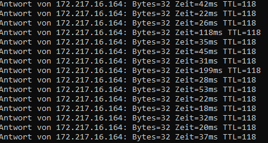

Hallo,
ich gehöre zu den Magenta 5G Kunden die mit einem schwankenden Ping zu kämpfen haben. (In Spielen gesellt sich je nach Server auch noch ordentlich Packet Loss hinzu, den niemand via DSL oder Glasfaser bekommt).
Zum Thema Ping habe ich einige Beiträge hier im Forum gefunden, aber nie mit einer erkennbaren Lösung.
z.B.
Auch ich habe mal den APN gewechselt, die MTU Packet Size überprüft, die 5G Outdoor Unit neu positioniert. Alles ohne Verbesserung. Ping an google.com als Beispiel:

Habe den Internet 5G 250 Vertrag (250MBit/s down, 25 Mbit/s up) mit 5G Outdoor Box, Standort Innsbruck. Bekomme auch häufig die versprochene Bandbreite zu Gesicht.
Da die Beiträge z.T. schon über ein Jahr alt sind... vllt hat sich ja doch etwas getan und jemand hat eine Idee?
Viele Grüße
hi @Supp345 ,
hast du dich schon mal bei unseren Techniker*innen unter 0676 200 7777 gemeldet und das näher prüfen lassen?
LG JD.
Wäre interessant, welchen Router du hast und ob da evtl. ein Firmware-Update ausstehend ist, sowie Empfangswerte.
-Wie sieht's mit anderen DNS-Servern aus wie zB Cloudflare (1.1.1.1 und 1.0.0.1) oder Quad9 (9.9.9.9 und 149.112.112.112)?
-Verwendest du LAN oder WLAN?
-Router mal auf Werkseinstellungen reseten mit ner Nadel oder nem Pin
@Supp345 gibt's schon Neuigkeiten?
Am 22.4.2023 um 21:01 schrieb FabianMK4:Wäre interessant, welchen Router du hast und ob da evtl. ein Firmware-Update ausstehend ist, sowie Empfangswerte.
-Wie sieht's mit anderen DNS-Servern aus wie zB Cloudflare (1.1.1.1 und 1.0.0.1) oder Quad9 (9.9.9.9 und 149.112.112.112)?
-Verwendest du LAN oder WLAN?
-Router mal auf Werkseinstellungen reseten mit ner Nadel oder nem Pin
Hi, sorry für's lange Warten, war beruflich Unterwegs.
-Bzgl. Router: FRITZ!Box 7590 auf neuestem Stand (die mitgelieferte, quasi namenlose Indoor Unit im Vertrag war absolut grottig was WLAN anging)
-DNS habe ich mal umgestellt, macht keinen Unterschied
-Eigentlich WLAN, die Werte oben habe ich aber bewusst über LAN ermittelt. Das macht keinen Unterschied.
-Router resetten - getan, keine Änderung.
Gruß
@Supp345 kein Problem.
Okay, finde ich komisch. Ich würde mal die Technik-Hotline telefonisch kontaktieren und fragen (bitte unbedingt sagen, was du schon alles versucht hast), was die für Lösungsvorschläge haben. Evtl. liegt es an der Outdoor-Unit.
Ich persönlich hatte nie Probleme mit dem Ping, dafür aber mit dem Download. Bei meinem 5G von A1 funktioniert jetzt beides problemlos.
Hier könntest du noch etwas nachlesen, sofern du das noch nicht gemacht hast. Besonders der untere Bereich wäre für dein Thema interessant.
vor einer Stunde schrieb FabianMK4:@Supp345 kein Problem.
Okay, finde ich komisch. Ich würde mal die Technik-Hotline telefonisch kontaktieren und fragen (bitte unbedingt sagen, was du schon alles versucht hast), was die für Lösungsvorschläge haben. Evtl. liegt es an der Outdoor-Unit.
Ich persönlich hatte nie Probleme mit dem Ping, dafür aber mit dem Download. Bei meinem 5G von A1 funktioniert jetzt beides problemlos.
Ich gehe fest davon aus dass es die Outdoor Unit ist. Oder viel mehr der Empfang der Outdoor Unit resp. das hier vorhandenen Netz.
Jedenfalls kein Hardware Fehler den ich mal eben fixen könnte. Aber mal schauen, ich rufe mal die Tage an...
@Supp345 hast du zufällig ein anderes Gerät, welches 5G kann oder die Möglichkeit eines zu leihen? Dann würde ich das mal vorschlagen, um die ODU auszuschließen.
@Supp345 Gibt es zu dem Thema etwas neues? Konntest du das Problem beheben?
Denke bei LTE und 5g wird sich nicht viel ändern! Bin froh das ich 12ms - 20ms habe ! Wenn man 1ms will dann muss man zu Kabel greifen wie Wien Energie zum Beispiel!
Aber so auf den Ping schaue ich selten da ich nicht online zocke eventuell deswegen für mich nicht so das Thema weil ja alles tadellos läuft !
Aber was ich sagen kann da es mein Sohn hat A1 da hat man den besten Ping auf alle Fälle mit T-Mobile und drei eher mehr !! Bei T-Mobile war es auch schon ab und zu kurz mal auf 267ms aber nach nächsten Speed Test wieder OK !
Wobei die Frage ist ob diese ganzen Speedtests auch stimmen wer kann es 100 pro sagen keiner !
So lange alles läuft ist es egal sage ich immer und wer viel wert legt aufs zocken oder der arge Zocker ist für den ist 5g LTE e keine Lösung wie cs Go etc etc der sollte zu Kabel greifen 😺 und LAN kein WLAN 😉
Aber bin nicht der arge Zocker nur für mich alleine ohne online 😂 auf der Couch mit der Switch 😁 zwar 43 aber da noch ein Kind hehe 😃 es geht nix über ein Mario drüber ! Spaß
P.s. bzw mit vpn probieren oder MTU spielen oder dns ändern etc etc
P.s. Sorry das ich das sage aber warum ist hier jeder 2 Thread Satz rufe die Hotline an haha genau die richtigen dann oder 😺 lustig oder traurig wie man es nimmt ! Hotline egal wo rufe ich nicht mal an weil keiner was weiß oder helfen kann von der Ferne 😄 oder Studenten neben Job machen 😁
Bearbeitet von Klaximaxi43